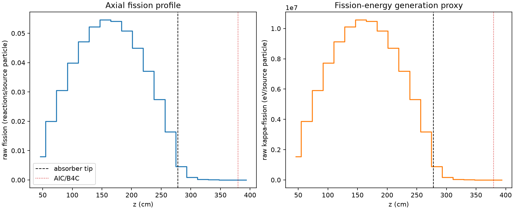
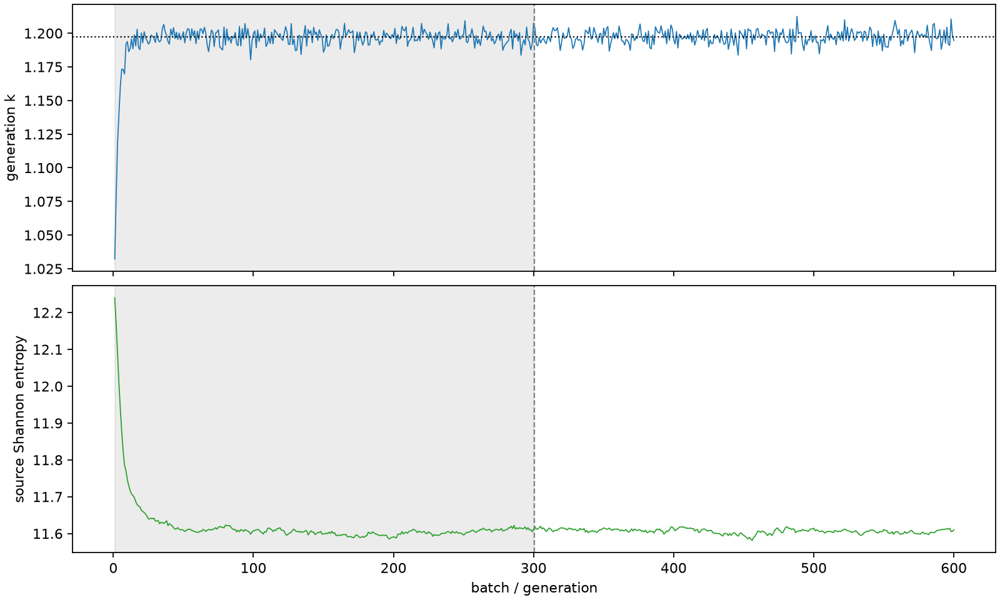

| field | value |
|---|---|
| experiment | V2-STAGE_128_OGRENCI_04-0017 |
| k | 1.197114109299994 |
| MC standard error | 0.00018775627206195323 |
| seconds | 992.8923053569997 |
| acceptance | not_assessed |
| convergence | review_required |
Completed is output integrity only; physical and statistical review required. Zero tallies do not prove zero production or zero uncertainty.
| diagnostic | value |
|---|---|
| geometric fuel voxels | 5280 |
| zero fission tally voxels | 84 |
| low signal fuel voxels | 940 |
| low signal fission share | 8.59161700616004e-05 |
| low signal kappa share | 8.595612149343013e-05 |
| important fission share | 0.9500566422463886 |
| previous filter included | 4340 |
| duration estimate s | 1562.5173488400023 |
| actual minus estimate s | -569.6250434830026 |
| fission relative MC error | statistics |
|---|---|
| all_geometric_fuel | {"voxels": 5280, "positive_mean_voxels": 5196, "zero_mean_voxels": 84, "undefined_relative_error_voxels": 84, "median": 0.010435949242985115, "p95": 0.7209228100826761, "maximum": 1.0000000000000002} |
| low_signal | {"voxels": 940, "positive_mean_voxels": 856, "zero_mean_voxels": 84, "undefined_relative_error_voxels": 84, "median": 0.5259453714883642, "p95": 1.0, "maximum": 1.0000000000000002} |
| important_95pct | {"voxels": 2993, "positive_mean_voxels": 2993, "zero_mean_voxels": 0, "undefined_relative_error_voxels": 0, "median": 0.007891016022674991, "p95": 0.011877525441958695, "maximum": 0.014408675331793998} |
| outside_previous_filter | {"voxels": 940, "positive_mean_voxels": 856, "zero_mean_voxels": 84, "undefined_relative_error_voxels": 84, "median": 0.5259453714883642, "p95": 1.0, "maximum": 1.0000000000000002} |
| kappa_fission relative MC error | statistics |
|---|---|
| all_geometric_fuel | {"voxels": 5280, "positive_mean_voxels": 5196, "zero_mean_voxels": 84, "undefined_relative_error_voxels": 84, "median": 0.010423157450761784, "p95": 0.7205580553032871, "maximum": 1.0000000000000002} |
| low_signal | {"voxels": 940, "positive_mean_voxels": 856, "zero_mean_voxels": 84, "undefined_relative_error_voxels": 84, "median": 0.5261423339881868, "p95": 1.0, "maximum": 1.0000000000000002} |
| important_95pct | {"voxels": 2993, "positive_mean_voxels": 2993, "zero_mean_voxels": 0, "undefined_relative_error_voxels": 0, "median": 0.007882094716235563, "p95": 0.011863936001969977, "maximum": 0.014392029839089781} |
| outside_previous_filter | {"voxels": 940, "positive_mean_voxels": 856, "zero_mean_voxels": 84, "undefined_relative_error_voxels": 84, "median": 0.5261423339881868, "p95": 1.0, "maximum": 1.0000000000000002} |
| axial bin | fission share | kappa-fission share |
|---|---|---|
| 1 | 0.016273486203919867 | 0.01627413319173297 |
| 2 | 0.04081673847341364 | 0.04081654291341607 |
| 3 | 0.06249418575550009 | 0.06249403248120961 |
| 4 | 0.08164814852517309 | 0.08164780482209835 |
| 5 | 0.09642017377590471 | 0.09641970190482124 |
| 6 | 0.10672048342966162 | 0.10672016906466988 |
| 7 | 0.1116117100767532 | 0.11161113480696126 |
| 8 | 0.11072951079087773 | 0.11072892881802121 |
| 9 | 0.10404810230776744 | 0.10404793810739746 |
| 10 | 0.09204373361386049 | 0.0920432429832756 |
| 11 | 0.075795218353364 | 0.07579481728231008 |
| 12 | 0.05604370628100993 | 0.05604355990141566 |
| 13 | 0.03348623179919642 | 0.03348626888048866 |
| 14 | 0.009401017262349669 | 0.00940315534133646 |
| 15 | 0.0018949828745136676 | 0.0018957420600162651 |
| 16 | 0.0004404700239520457 | 0.0004406644154398007 |
| 17 | 0.00010348433625869599 | 0.00010353179517089436 |
| 18 | 2.3317880656033266e-05 | 2.3329843305806462e-05 |
| 19 | 4.698977627274032e-06 | 4.701025030501996e-06 |
| 20 | 5.992582402764292e-07 | 6.003618823329138e-07 |
Histories include the inactive-to-active transition at batch 300. kappa-fission approximates fission energy production, not total heat deposition.

